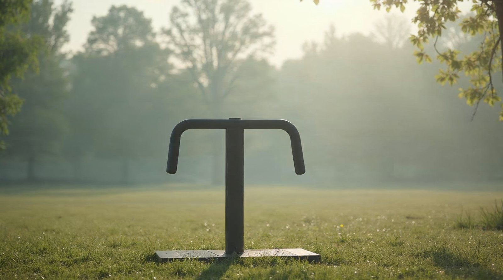
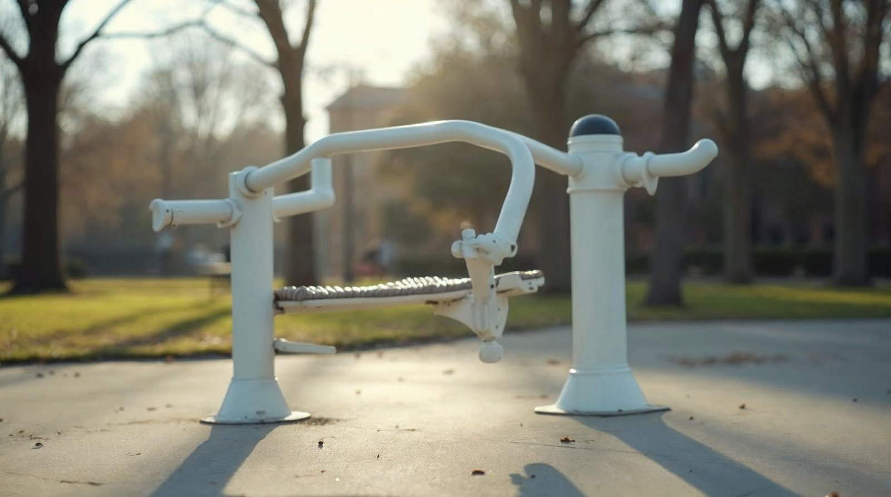
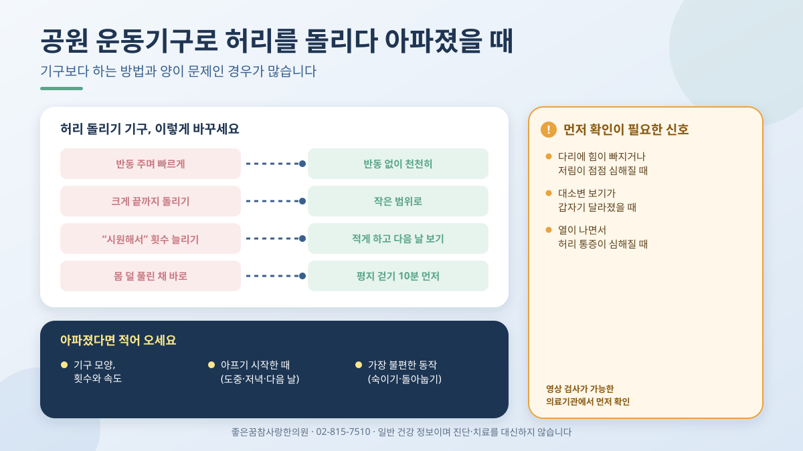

이종호 한의사 감수좋은꿈참사랑한의원 대표원장 (한의사 면허번호 19769)발행 2026-11-24 · 수정 2026-11-26
이 글의 차례
- 왜 이런 불편이 생길 수 있나요
- 공원 운동기구마다 허리에 실리는 힘은 어떻게 다를까요?
- 허리를 돌릴 때 실제로는 어디가 움직일까요?
- 왜 아침 산책길 기구가 더 부담이 될까요?
- 자주 하는 오해
- 예를 들면 이런 경우입니다
- 왜 '시원하다'는 느낌만 믿기 어려울까요?
- 먼저 이렇게 여쭙니다
- 스스로 점검해 보세요
- 일상에서 먼저 해 볼 수 있는 것
- 허리 근육이 놀란 것인지 어떻게 짐작해 볼까요?
- 집에서 해 볼 수 있는 부드러운 움직임
- 허리가 불편한 동안 하루는 이렇게 보내 보세요
- 기구 대신 할 수 있는 운동은 무엇일까요?
- 기구 전에 몸통을 데우는 간단한 순서
- 기구에 오르기 전 스스로 물어볼 세 가지
- 다시 기구를 시작할 때는 어떤 순서로 할까요?
- 부모님과 함께 공원에 가신다면
- 얼마나 지켜보고, 언제 바로 확인할까요
- 한의원에서 함께 살필 수 있는 경우
- 어르신이 기구를 쓰실 때 더 살필 점
- 허리 기록은 이렇게 남겨 보세요
- 이렇게 기록해 오시면 상담이 쉬워집니다
- 진료를 받은 날은 어떻게 지낼까요?
- 이런 증상은 먼저 확인이 필요합니다
- 함께 읽으면 좋은 글
동네 공원과 산책로 곳곳에는 허리 돌리기, 다리 흔들기 같은 야외 운동기구가 있습니다. 산책길에 몇 번 돌려 보다가 "시원하다"며 횟수를 늘렸는데, 다음 날 허리가 뻐근해 고개를 숙이기 힘들다는 분이 있습니다. 기구 자체보다 하는 방법과 양이 문제인 경우가 많습니다.
왜 이런 불편이 생길 수 있나요
- 반동을 주어 빠르게 돌리면 허리가 스스로 멈출 수 있는 범위를 넘어 돌아가기 쉽습니다.
- 몸이 덜 풀린 상태에서 갑자기 큰 동작을 하면 허리 주변 근육이 놀라 굳을 수 있습니다.
- "시원하다"는 느낌에 횟수를 늘리다 보면 같은 관절에 부담이 겹칩니다.
- 평소 오래 앉아 지내 허리와 엉덩이가 뻣뻣한 분일수록 비트는 동작에 더 예민할 수 있습니다.
공원 운동기구마다 허리에 실리는 힘은 어떻게 다를까요?
공원 기구는 모양이 비슷해 보여도 허리를 쓰는 방향이 서로 다릅니다. 어떤 기구에서 아파졌는지 알면 허리 어느 쪽에 부담이 실렸는지 짐작하기 쉽습니다.
- 원판 위에 서서 몸을 좌우로 돌리는 기구: 허리를 비트는 힘이 반복해서 실립니다.
- 다리를 앞뒤로 크게 흔드는 기구: 반동이 커지면 허리가 뒤로 젖혀지며 아래쪽 허리에 부담이 갈 수 있습니다.
- 등을 기대고 뒤로 젖히는 기구: 크게 젖힐수록 허리 뒤쪽 관절이 눌리기 쉽습니다.
- 누워서 상체를 일으키는 벤치: 반동을 주어 빠르게 하면 허리와 배 근육이 함께 긴장합니다.
허리를 돌릴 때 실제로는 어디가 움직일까요?
몸을 좌우로 돌릴 때 허리 아래쪽 관절이 돌아가는 범위는 생각보다 크지 않습니다. 몸통이 돌아가는 움직임은 주로 등 가운데와 고관절이 나눠 맡습니다.
그런데 오래 앉아 지내 등과 고관절이 뻣뻣해지면, 그만큼 덜 움직이는 몫을 허리 아래쪽이 떠맡게 됩니다. 허리가 아파 오셨는데 제가 고관절과 등을 함께 살피는 것도 이 때문입니다.
왜 아침 산책길 기구가 더 부담이 될까요?
밤사이 오래 누워 있던 몸은 아침에 아직 굳어 있습니다. 기온이 낮은 계절에는 근육이 더 뻣뻣해, 같은 횟수를 해도 저녁보다 아침에 허리가 쉽게 놀랍니다.
게다가 산책길 중간에 기구가 있으면 몸이 충분히 데워지기 전에 바로 큰 동작을 하게 됩니다. 아침에 기구를 쓰신다면 산책을 먼저 하고 돌아오는 길에 하는 순서로 바꿔 보세요.
자주 하는 오해
- 허리가 뻐근할 때 더 세게 돌려 풀어야 한다고 여기기 쉽지만, 통증이 있는 날 비트는 동작을 더하면 부담이 겹칠 수 있습니다.
- '우두둑' 소리가 나야 시원하게 풀린 것이라고 생각하는 분이 많지만, 소리가 나는지보다 동작 뒤 몸이 편한지가 더 중요합니다.
- 운동기구는 누구나 같은 횟수로 하면 된다고 여기기 쉽지만, 나이와 평소 활동량, 허리 상태에 따라 알맞은 양이 다릅니다.
- 아프면 누워서 쉬기만 해야 한다고 생각하기 쉽지만, 심하지 않다면 무리 없는 범위에서 가볍게 걸으며 지내는 편을 권합니다.
예를 들면 이런 경우입니다
- 예를 들어 아침 산책길에 허리 돌리기 기구를 50번씩 하던 어르신이라면, 처음 일주일은 반동 없이 좌우 10번쯤으로 줄이고 다음 날 아침 허리 상태를 보며 조금씩 늘려 갑니다.
- 예를 들어 하루 종일 앉아 일하다 퇴근길에 공원에 들러 기구를 하는 직장인이라면, 바로 기구에 오르기보다 평지를 10분쯤 걸어 몸을 데운 뒤 작은 범위부터 시작해 봅니다.
- 예를 들어 이미 허리가 뻐근한 날 '풀어 주면 괜찮아지겠지' 하고 기구를 더 세게 돌리는 분이라면, 통증이 있는 날은 비트는 동작을 쉬고 걷기 정도로 바꾸는 편이 부담이 적습니다.
왜 '시원하다'는 느낌만 믿기 어려울까요?
허리를 비틀면 뻣뻣했던 근육이 잠시 늘어나며 시원한 느낌이 듭니다. 그 느낌이 좋아 횟수를 늘리게 되는데, 시원함은 그 순간의 느낌일 뿐 허리가 감당할 수 있는 양을 알려 주지는 않습니다.
그래서 저는 기구를 하는 동안의 느낌보다 다음 날 아침 허리가 어떤지를 기준으로 삼으시라고 말씀드립니다. 다음 날 아침이 편했다면 알맞은 양이었고, 뻣뻣했다면 줄여야 할 신호로 보시면 됩니다.

먼저 이렇게 여쭙니다
- 어떤 운동기구를 몇 번쯤 하셨나요?
- 반동을 주거나 빠르게 돌리셨나요?
- 아픈 곳은 허리 가운데인가요, 옆구리 쪽인가요?
- 다리가 저리거나 당기지는 않나요?

스스로 점검해 보세요
- 기구를 반동을 주어 빠르게 돌린다
- 몸을 데우지 않고 바로 기구부터 한다
- '시원하다'는 느낌에 횟수를 정하지 않고 계속한다
- 다음 날 아침 허리가 뻣뻣한 날이 일주일에 두 번 이상이다
- 허리를 숙이거나 돌아누울 때 한쪽만 찌릿하다
- 엉덩이나 허벅지 뒤쪽까지 당기는 느낌이 있다
해당하는 항목이 여럿이라면 진료 때 말씀해 주시면 상담이 쉬워집니다.
일상에서 먼저 해 볼 수 있는 것
- 허리 돌리기 기구는 반동 없이 천천히, 작은 범위로 하기
- 처음에는 횟수를 적게 하고 다음 날 몸 상태를 보고 늘리기
- 통증이 생긴 날은 허리를 비트는 동작 쉬기
- 운동기구보다 평지 걷기로 10분쯤 몸을 먼저 데우기
공원 운동기구 옆에는 사용법 안내판이 붙어 있는 경우가 많으니 한 번 읽어 보고, 손잡이를 단단히 잡은 채 시작하세요. 기구를 할 때는 숨을 참지 말고 천천히 내쉬며 움직이고, 끝난 뒤에는 5분쯤 천천히 걸어 몸을 정리합니다. 다음 날 아침 허리 상태를 짧게 적어 두면 어느 정도가 내 몸에 맞는 양인지 가늠하기 쉬워집니다.
허리 근육이 놀란 것인지 어떻게 짐작해 볼까요?
기구를 하다 허리 근육이 놀란 경우에는 숙이거나 돌아누울 때처럼 특정 동작에서 아프고, 손으로 누르면 아픈 자리가 짚이는 경우가 많습니다. 가만히 쉬면 덜하고 움직이기 시작할 때 다시 뻐근해지기도 합니다.
반면 허리보다 엉덩이 아래나 허벅지 뒤쪽으로 당기는 느낌이 함께 있다면 살필 곳이 더 넓어집니다. 그런 느낌이 있다면 어느 자세에서, 어디까지 내려가는지 진료 때 꼭 말씀해 주세요.
집에서 해 볼 수 있는 부드러운 움직임
통증이 조금 가라앉으면 굳은 허리를 천천히 깨우는 동작을 해 볼 수 있습니다. 모두 아프지 않은 범위에서, 숨을 내쉬며 천천히 하는 것이 원칙입니다.
- 누워서 무릎을 세운 채 두 무릎을 좌우로 작게 눕혔다 세우기 10번
- 네발 자세에서 등을 천천히 둥글게 말았다 펴기 5번
- 의자에 앉아 두 발을 바닥에 붙이고 허리를 곧게 세운 채 깊게 숨쉬기 1분
- 평지에서 편한 속도로 10~15분 걷기
동작 중에 찌릿한 통증이 생기면 거기서 멈추고, 그 동작은 진료 때 함께 확인해 주세요.
허리가 불편한 동안 하루는 이렇게 보내 보세요
- 아침에 일어날 때는 옆으로 돌아누운 뒤 팔로 바닥을 밀며 천천히 일어나기
- 세수할 때는 한 손으로 세면대를 짚고 무릎을 살짝 굽히기
- 30~40분 넘게 앉아 있지 말고 일어나 잠깐 걷기
- 장바구니는 한 손에 몰지 말고 양손에 나눠 들기
- 바로 누워 잘 때는 무릎 아래에, 옆으로 잘 때는 무릎 사이에 베개 두기
기구 대신 할 수 있는 운동은 무엇일까요?
허리가 회복되는 동안에는 기구보다 평지 걷기가 부담이 적습니다. 처음에는 편한 속도로 15분, 괜찮으면 조금씩 늘려 보세요. 팔을 앞뒤로 자연스럽게 흔들면 몸통도 부드럽게 함께 움직입니다.
공원에 나가셨다면 비탈이나 계단이 많은 길보다 평평한 산책로를 고르세요. 걷는 중간에 벤치에 앉아 숨을 고르며 쉬어 가셔도 괜찮습니다.
기구 전에 몸통을 데우는 간단한 순서
- 팔을 앞뒤로 크게 흔들며 1분 걷기
- 어깨를 앞뒤로 천천히 10번씩 돌리기
- 두 손을 허리에 대고 골반으로 작은 원 그리기 좌우 5번씩
- 무릎을 살짝 굽혔다 펴기 10번
이렇게 몸통과 고관절이 먼저 움직일 준비를 하면, 기구에서 허리 아래쪽만 크게 돌아가는 일을 줄일 수 있습니다.
기구에 오르기 전 스스로 물어볼 세 가지
- 오늘 허리 상태는 0~10점 가운데 몇 점인가?
- 기구를 하기 전에 10분쯤 걸어 몸을 데웠는가?
- 오늘은 몇 번만 할지 미리 정했는가?
허리 점수가 평소보다 높은 날이라면 그날은 기구를 쉬고 걷기만 하셔도 충분합니다. 이 세 가지를 습관처럼 묻다 보면 시원함에 이끌려 횟수를 늘리는 일이 줄어듭니다.
다시 기구를 시작할 때는 어떤 순서로 할까요?
- 첫 주: 평지 걷기 10분 뒤, 허리 돌리기는 반동 없이 좌우 10번만
- 둘째 주: 다음 날 아침 허리가 편했다면 좌우 15~20번으로 늘리기
- 셋째 주부터: 속도는 그대로 두고 횟수만 조금씩 늘리기
어느 주든 다음 날 아침 허리가 다시 뻣뻣해졌다면 전 주의 양으로 돌아가 주세요. 빨리 예전 횟수로 돌아가는 것보다 다시 아프지 않는 것이 먼저입니다.
부모님과 함께 공원에 가신다면
어르신은 기구를 습관처럼 오래 하시는 경우가 많습니다. 함께 산책하신다면 횟수를 같이 세어 드리고, 반동 없이 천천히 하시도록 옆에서 말씀드려 주세요.
부모님이 허리가 아프다고 하시면 어떤 기구를 몇 번 하셨는지 사진과 함께 기억해 두셨다가 진료 때 알려 주세요. 곁에서 본 모습이 진찰에 큰 도움이 됩니다.
얼마나 지켜보고, 언제 바로 확인할까요
가볍게 뻐근한 정도라면 비트는 동작을 쉬고 무리 없는 범위에서 걸으며 2~3일 지켜보세요. 일주일이 지나도 숙이거나 돌아눕는 동작이 계속 불편하거나, 나아지는가 싶다가 다시 아파지기를 반복한다면 아픈 동작과 몸의 균형을 진료로 확인해 보시길 권합니다.
한의원에서 함께 살필 수 있는 경우
- 운동 뒤 허리가 뻐근하고 숙이기 어려운 경우, 아픈 동작과 몸의 균형을 함께 살핍니다.
- 허리와 함께 엉덩이나 다리가 당기는 경우, 걷는 습관과 자세를 함께 살핍니다.
- 운동을 계속하고 싶은 경우, 무리 없는 운동 순서를 함께 정합니다.
좋은꿈참사랑한의원에서는 어떤 동작에서 아파졌는지 충분히 듣고 허리의 움직임을 살핀 뒤, 침·약침·추나·온열 치료 가운데 상태에 맞는 방법을 정합니다.
처음 오시면 데스크에서 기본 정보를 적고, 원장이 맥부터 짚으면서 어떤 기구를 어떻게 했는지, 언제부터 어떤 동작이 아픈지를 여쭙습니다. 이어서 허리·골반·고관절의 움직임을 살피고, 필요하다고 판단될 때 초음파로 근육과 힘줄을 확인합니다.
오늘 받을 치료와 이유를 먼저 설명해 드린 뒤 진행하고, 치료 뒤 상태를 다시 확인해 당분간 피할 동작과 다음 방문 시기를 안내해 드립니다.
어르신이 기구를 쓰실 때 더 살필 점
어르신은 허리뿐 아니라 균형도 함께 살펴야 합니다. 몸을 돌리는 원판 기구는 발밑이 움직여, 균형이 흔들리면 넘어지기 쉽습니다. 양손으로 손잡이를 꼭 잡고, 어지러운 날에는 기구를 쉬세요.
겨울 아침에는 기구 발판에 서리가 내려 미끄러울 수 있습니다. 발판이 젖어 있거나 하얗게 얼어 있다면 그날은 기구 대신 걷기만 하시길 권합니다.
허리 기록은 이렇게 남겨 보세요
- 월 아침 4점 / 기구 쉼 / 평지 걷기 15분
- 화 아침 3점 / 허리 돌리기 반동 없이 10번 / 저녁 3점
- 수 아침 5점 / 전날 장바구니 무겁게 듦
이렇게 기구, 걷기, 그 밖의 일을 함께 적어 두면 무엇이 허리를 다시 불편하게 했는지 진료 때 함께 찾기 쉽습니다.
이렇게 기록해 오시면 상담이 쉬워집니다
- 사용한 기구 이름이나 모양, 횟수와 속도
- 아프기 시작한 때(하는 도중, 그날 저녁, 다음 날 아침)
- 가장 불편한 동작(숙이기, 돌아눕기, 일어서기)
- 이전에 허리를 다친 적이 있다면 그 시기
기구 이름을 모르겠다면 휴대전화로 기구 사진을 한 장 찍어 오셔도 됩니다. 어떤 방향으로 몸을 돌리는 기구인지 함께 보면 허리에 어떤 힘이 실렸을지 이해하기 쉽고, 다시 운동을 시작할 때 어느 정도로 하면 좋을지 정하는 데도 도움이 됩니다.
진료를 받은 날은 어떻게 지낼까요?
진료를 받은 날에는 기구를 쉬고 가볍게 걷는 정도로 지내 주세요. 무거운 물건을 드는 일이나 오래 운전하는 일은 되도록 다음 날로 미뤄 두시면 좋습니다.
그날 저녁과 다음 날 아침, 숙이거나 돌아누울 때의 느낌을 점수로 적어 두세요. 다음 진료에서 그 기록부터 이어서 여쭙고, 기구를 다시 시작할 시기도 함께 정합니다.
이런 증상은 먼저 확인이 필요합니다
- 다리에 힘이 빠지거나 저림이 점점 심해지는 경우
- 대소변 보기가 갑자기 달라졌거나, 열이 나면서 통증이 심해지는 경우
이런 신호가 있으면 한의원보다 가까운 병원이나 응급실을 먼저 찾으세요.
함께 읽으면 좋은 글
- 골프 스윙을 한 뒤 허리가 비틀리듯 아픈 것은 어떻게 살피나요?
- 허리를 삐끗한 초기에는 왜 자주 오라고 하나요?
- 허리 디스크 초기 신호와 다리 저림은 어떻게 구분하나요?

여쭙는 것
- 어떤 운동기구를 몇 번쯤 하셨나요?
- 반동을 주거나 빠르게 돌리셨나요?
- 아픈 곳은 허리 가운데인가요, 옆구리 쪽인가요?
생활에서 해 볼 것
- 허리 돌리기 기구는 반동 없이 천천히, 작은 범위로 하기
- 처음에는 횟수를 적게 하고 다음 날 몸 상태를 보고 늘리기
- 통증이 생긴 날은 허리를 비트는 동작 쉬기
한의원에서 함께 살필 것
- 운동 뒤 허리가 뻐근하고 숙이기 어려운 경우, 아픈 동작과 몸의 균형을 함께 살핍니다.
- 허리와 함께 엉덩이나 다리가 당기는 경우, 걷는 습관과 자세를 함께 살핍니다.
- 운동을 계속하고 싶은 경우, 무리 없는 운동 순서를 함께 정합니다.
먼저 확인이 필요한 신호
- 다리에 힘이 빠지거나 저림이 점점 심해지는 경우
- 대소변 보기가 갑자기 달라졌거나, 열이 나면서 통증이 심해지는 경우
한눈에 보는 표
| 구분 | 핵심 |
|---|---|
| 여쭙는 것 | 어떤 운동기구를 몇 번쯤 하셨나요? 반동을 주거나 빠르게 돌리셨나요? |
| 생활에서 해 볼 것 | 허리 돌리기 기구는 반동 없이 천천히, 작은 범위로 하기 처음에는 횟수를 적게 하고 다음 날 몸 상태를 보고 늘리기 |
| 한의원에서 함께 살필 것 | 운동 뒤 허리가 뻐근하고 숙이기 어려운 경우, 아픈 동작과 몸의 균형을 함께 살핍니다. 허리와 함께 엉덩이나 다리가 당기는 경우, 걷는 습관과 자세를 함께 살핍니다. |
| 먼저 확인이 필요한 신호 | 다리에 힘이 빠지거나 저림이 점점 심해지는 경우 대소변 보기가 갑자기 달라졌거나, 열이 나면서 통증이 심해지는 경우 |
자주 묻는 질문
운동기구를 아예 쓰면 안 되나요?
천천히, 작은 범위로 하면 몸을 푸는 데 쓸 수 있습니다. 통증이 있을 때는 쉬는 것이 먼저입니다.
파스를 붙여도 되나요?
피부가 예민하지 않다면 쓸 수 있지만, 통증이 며칠 이어지면 상담을 권합니다.
아플 때 누워만 있어야 하나요?
통증이 심하지 않다면 무리 없는 범위에서 가볍게 걸어 몸이 굳지 않게 하는 방법을 권합니다. 심하면 상담받으세요.
허리가 나아지면 언제부터 다시 기구를 해도 되나요?
일상 동작에서 통증이 거의 없어진 뒤, 반동 없이 작은 범위로 횟수를 적게 시작해 다음 날 몸 상태를 보며 늘려 가세요.
좋은꿈참사랑한의원은 재진 때 지난번 이야기부터 이어서 여쭙니다. 진료시간과 예약은 오시는 길에서 확인하세요.
어디서 상담받을 수 있나요?
좋은꿈참사랑한의원은 서울 동작구 만양로2길 2 신성빌딩 3층·5층(서울 동작구 상도동, 7호선 상도역 3번 출구 근처)에 있습니다. 한의사 3명(이종호 대표원장, 조영기 수석진료원장, 정원영 진료원장)이 진료합니다. 진료시간은 평일 09:30~20:00(점심 13:00~14:00), 토·일·공휴일 09:30~15:00이며, 방문 전 전화로 확인을 권합니다. 예약은 네이버 예약, 카카오톡 상담, 전화 02-815-7510로 받습니다.
이 글은 일반적인 건강 정보이며 개인의 진단이나 치료를 대신하지 않습니다. 증상이 있거나 복용 중인 약이 있다면 진료를 통해 확인하세요. 치료 효과는 개인마다 다를 수 있습니다.
작성 기준: 일반적으로 알려져 있는 건강 정보를 참고해 정리했습니다(대표원장 감수). 증상 기록은 1~2주 동안 하루 1회, 비슷한 시간에 적어 오시면 지난 상태와 비교하기 쉽습니다.